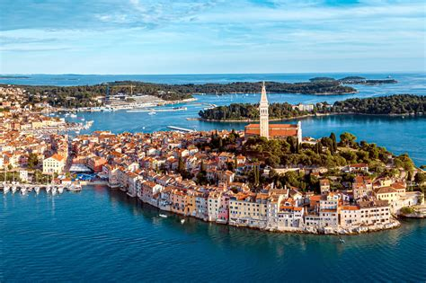

Rovinj: Kroatiens Schönheit auf der Halbinsel Istrien

An der Westküste Istriens gelegen, ist Rovinj heute einer der am weit entwickeltsten touristischen Urlaubsorte Kroatiens. Bekannt ist Rovinj als eines der malerischsten und romantischsten Städtchen an der Adria. Rovinj zieht schon seit vielen Jahrzehnten zahlreiche Touristen an und die Mehrheit kehrt jedes Jahr wieder zurück. Der Grund dafür ist im Flair vergangener Zeiten zu suchen. Dies spüren Sie besonders, wenn Sie durch die engen Altstadtgassen spazieren. Die Stadt wurde auf einer Insel erbaut und erst im 18.Jhd. mit dem Festland verbunden. Begeistern werden Sie auch die 22 Inseln und Inselchen, das angenehme mediterrane Klima, aufmerksam angelegte Grünflächen, Sauberkeit und Ordnung in den Straßen, freundliche Einwohner und viele andere Ereignisse.
Rovinj verbindet auf eine interessante Weise die Tradition eines kleinen Fischerortes, die Sie auch heute noch , während stattfindender Fischerfeste oder in einer der Spacio's (einst sehr populäre Treffpunkte der Fischer) spüren können, mit modernen, touristischen Trends, einem reichhaltigen Angebot an Speisen und Weinen und einem hohen Standard bei den Dienstleistungen.
Gleichzeitig ist die Stadt unterhalb der Kirche zur Hlg. Euphemia ein beliebter Treffpunkt für Künstler aus der ganzen Welt. Neben zahlreichen Galerien, die sich in der ganzen Stadt verteilen, findet auch einmal jährlich die Grisia statt, die bekannteste Kunstausstellung unter freiem Himmel an der gesamten Adria.
Es ist schwierig alles Interessante unserer Stadt aufzuzählen. Deshalb schlagen wir Ihnen vor, die Stadt selbst zu besuchen und sich ihr zu überlassen... Wir sind sicher, daß Sie etwas nach Ihrem Geschmack finden werden und daß Sie, früher oder später, hierher zurückkehren.